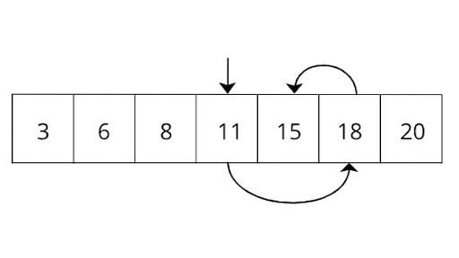

Shorting

Pengertian Algoritma Shorting (Pengurutan) Dalam Pemrograman
Algoritma sorting adalah suatu metode atau teknik untuk mengurutkan data atau elemen-elemen dalam suatu struktur data secara teratur. Algoritma sorting merupakan salah satu konsep penting dalam pemrograman, tujuannya untuk mengubah data yang tidak teratur menjadi urutan yang teratur, misalnya mengurutkan data dari yang terbesar ke yang terkecil, atau sebaliknya.
Jenis Algoritma Shorting
Buble Shorting
Bubble Sort adalah salah satu algoritma sorting yang paling sederhana. Algoritma ini bekerja dengan membandingkan elemen-elemen berpasangan dalam daftar dan menukar mereka jika diperlukan. Proses ini terus berlanjut hingga semua elemen berada dalam urutan yang benar.
First Pass
- Mulai dari indeks pertama array.
- Bandingkan element pertama dengan element kedua. Jika element pertama lebih besar dari element kedua, tukar posisi keduanya.
- Lanjutkan dengan membandingkan element kedua dengan element ketiga, dan seterusnya hingga satu element sebelum element terakhir.
- Setelah mencapai element terakhir, element terbesar akan berada di posisi terakhir.
Second Pass
- Ulangi langkah-langkah 2-4 untuk element-element yang belum terurut, tetapi kali ini hanya hingga element sebelum element terakhir yang sudah terurut pada iterasi sebelumnya.
Third Pass
- Algoritma berhenti ketika tidak ada lagi pertukaran posisi element yang dilakukan pada iterasi.
Jenis Algoritma Shorting
Buble Shorting
Bubble Sort adalah salah satu algoritma sorting yang paling sederhana. Algoritma ini bekerja dengan membandingkan elemen-elemen berpasangan dalam daftar dan menukar mereka jika diperlukan. Proses ini terus berlanjut hingga semua elemen berada dalam urutan yang benar.
First Pass
- Mulai dari indeks pertama array.
- Bandingkan element pertama dengan element kedua. Jika element pertama lebih besar dari element kedua, tukar posisi keduanya.
- Lanjutkan dengan membandingkan element kedua dengan element ketiga, dan seterusnya hingga satu element sebelum element terakhir.
- Setelah mencapai element terakhir, element terbesar akan berada di posisi terakhir.
Second Pass
- Ulangi langkah-langkah 2-4 untuk element-element yang belum terurut, tetapi kali ini hanya hingga element sebelum element terakhir yang sudah terurut pada iterasi sebelumnya.
Third Pass
- Algoritma berhenti ketika tidak ada lagi pertukaran posisi element yang dilakukan pada iterasi.